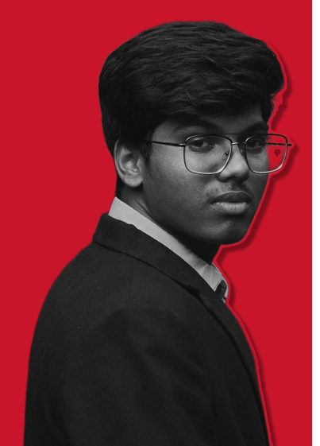

For the classic lovers
A passion project exploring how retro culture, timeless products, and modern UX can come together to create a shopping experience that feels both familiar and fresh.
Digital experiences designed, animated, and developed by JunksofJV. Creating products that users enjoy using and brands are proud to showcase.
Every project goes through three states. So does this page.
I sit at the intersection of design, motion, and frontend development. Over the past 2+ years, I've been helping transform ideas into polished digital experiences, from wireframes and interfaces to micro-interactions, animations, and production-ready websites.
Seven projects across brand, product and web. One more is on the desk.
Restaurant brand and web design

Virtual art gallery, UI concept

Travel management app, UX case study

Digital payment app UI

Inventory management dashboard

Movie website UI design

Real-estate landing page

 Drafting the next one.
Drafting the next one.Every project begins as a collection of ideas, sketches, and possibilities. My role is to shape that creative chaos into something purposeful. JunksofJV is rooted in the belief that every idea has potential. Through design, motion, and code, I turn rough concepts into experiences worth remembering.
Nine tools, sorted by the state they serve.
Shaping the interface
 Figma
Figma Adobe XD
Adobe XD Photoshop
Photoshop Illustrator
IllustratorMaking it move
 After Effects
After Effects LottieFiles
LottieFilesShipping it
 HTML
HTML CSS
CSS JavaScript
JavaScriptThis is where the junk becomes interesting.
A passion project exploring how retro culture, timeless products, and modern UX can come together to create a shopping experience that feels both familiar and fresh.

A concept project exploring virtual exhibitions, interactive spaces, and curated collections through a seamless and engaging digital environment.

A concept project focused on cinematic visuals, character-driven storytelling, and an engaging fan experience.

I design interfaces, animate ideas, build digital experiences, and occasionally turn caffeine into creative solutions. From UI/UX and motion graphics to content and web design, I'm driven by making things look good, feel right, and work seamlessly.
j.followedby.v@gmail.comCreating. Experimenting. Evolving.
You've reached the end of the scroll.
But the ideas don't stop here.